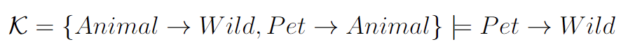
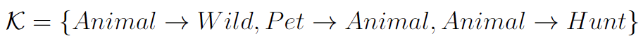
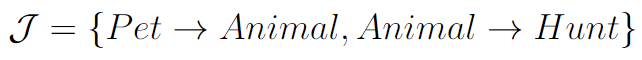

Classical Reasoning
Knowledge representation and reasoning involves the expression of reasoning using formal languages known as logics. Although there are numerous types of logics, our primary focus lies in propositional logic. Classical propositional logic serves as the foundational framework for extending to KLM-style defeasible reasoning.
In classical propositional logic, we represent entities, like animals and pets, as propositional atoms, and we utilize logical connectives to construct more intricate statements, which we refer to as formulas. Through the concept of entailment, we can deduce new knowledge from the existing pool of knowledge.  A group of statements is labeled as a knowledge base, K, as it encapsulates the knowledge we have formalized. Building an information repository in the form of a knowledge base and employing classical entailment for information deduction, as illustrated earlier, furnishes us with a straightforward reasoning system.
Classical reasoning is in many ways the foundation for more advanced forms of reasoning such as KLM-style defeasible propositional logic.
Explanation
Occasionally, we seek to understand the underlying reasons for the validity of certain entailments. In classical logic, explanation provide insight into which statements within our knowledge base are accountable for a specific entailment. Our research primarily concentrates on a type of explanation termed justification, which consists of the essential subsets of statements enabling us to draw a particular conclusion.
For example, suppose we know the unrelated information that 'animals can hunt':  The entailment that 'pets can hunt' for the knowledge base above then has the justification  because this represents the concept of providing "just enough" information to support the inference that 'pets can hunt'. It demonstrates how justifications align with how people typically explain their reasoning for inferences. In such a context, we wouldn't normally assert 'animals are wild' when providing a rationale for why 'pets can hunt'.
Explanations have proven to be a critical component of reasoning systems. This concept is especially valuable for debugging knowledge bases, and it has also been demonstrated to enhance user understanding and confidence in reasoning systems. Consequently, they constitute an essential element in the practical application of reasoning systems, underscoring their significance in extending to defeasible reasoning.